El papa León catorce inicia hoy su visita apostólica de seis días al Perú, la más extensa de su gira sudamericana en 2026. “ Bueno, después pasaron los años y como monseñor Miguel (Cabrejos) ha contado desde el año 1985, no seguidos, pero siempre he estado pues muy presente (en el Perú).
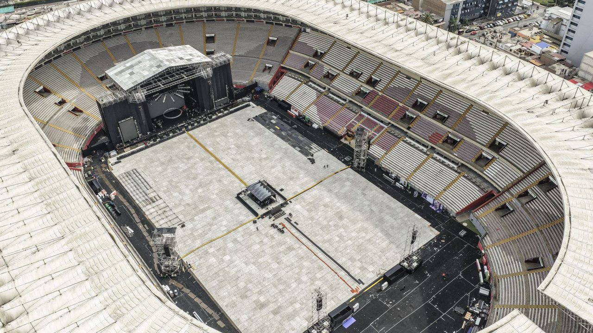
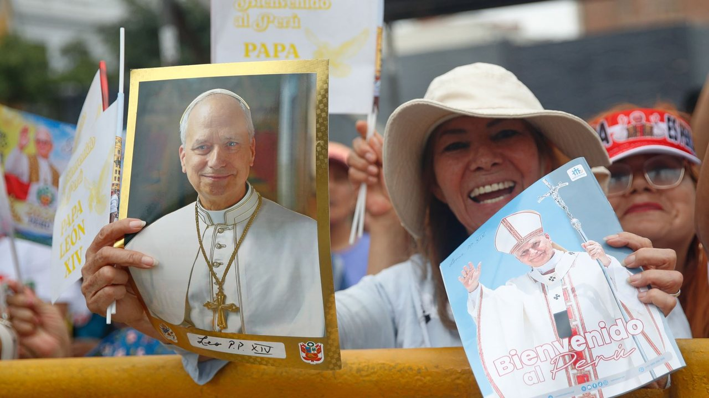
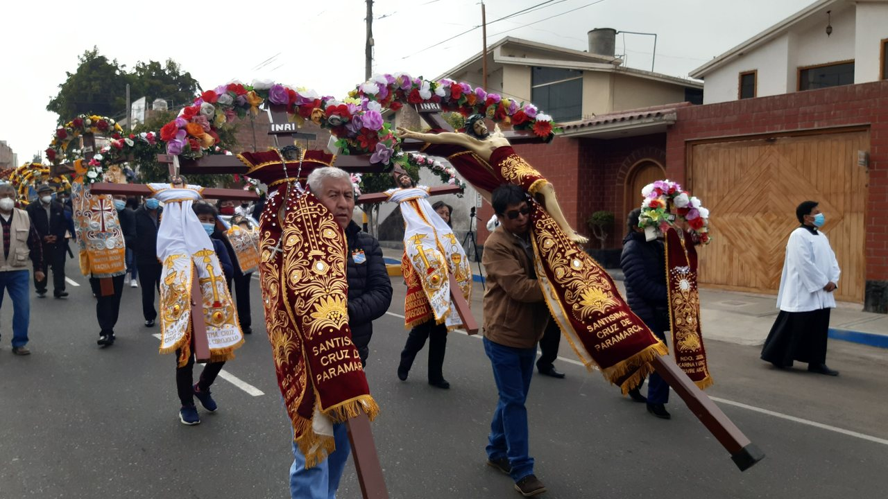
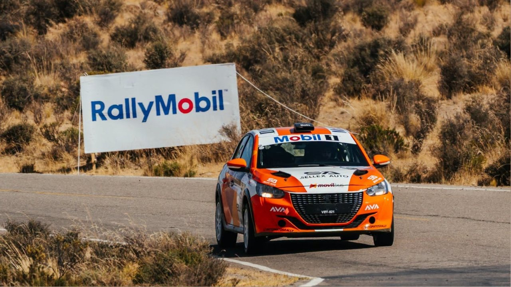
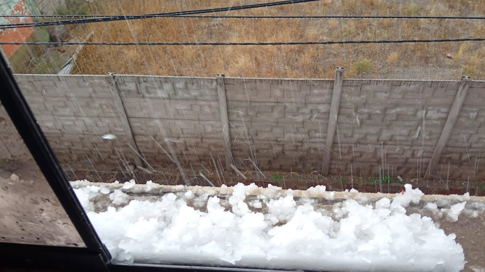
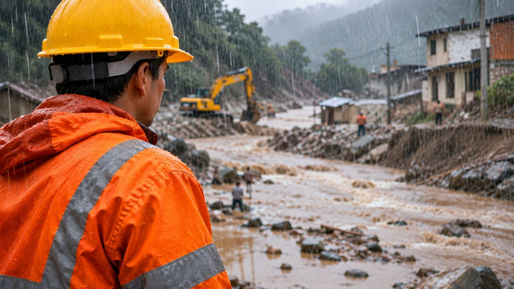
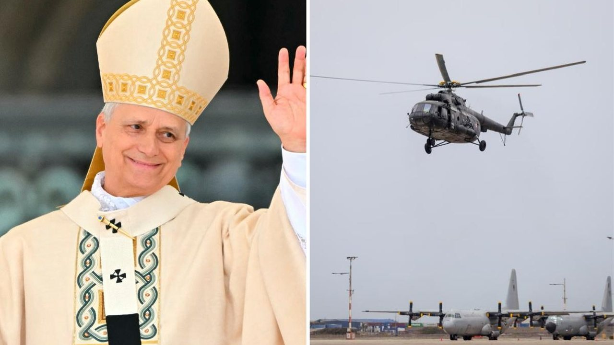
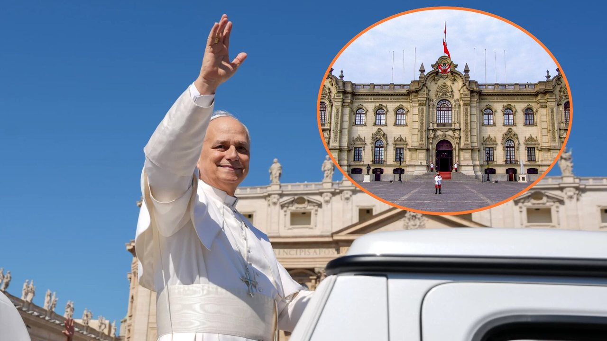
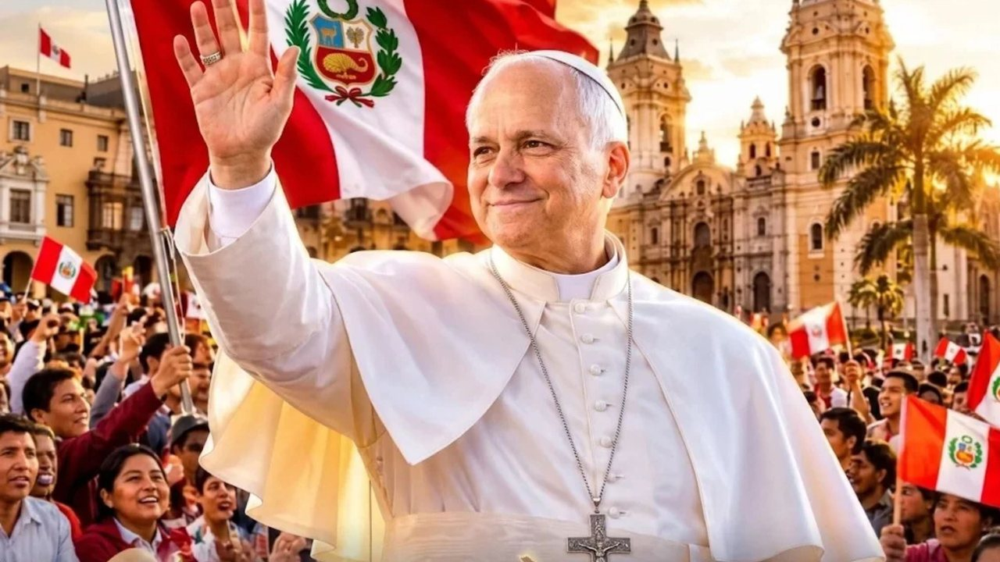
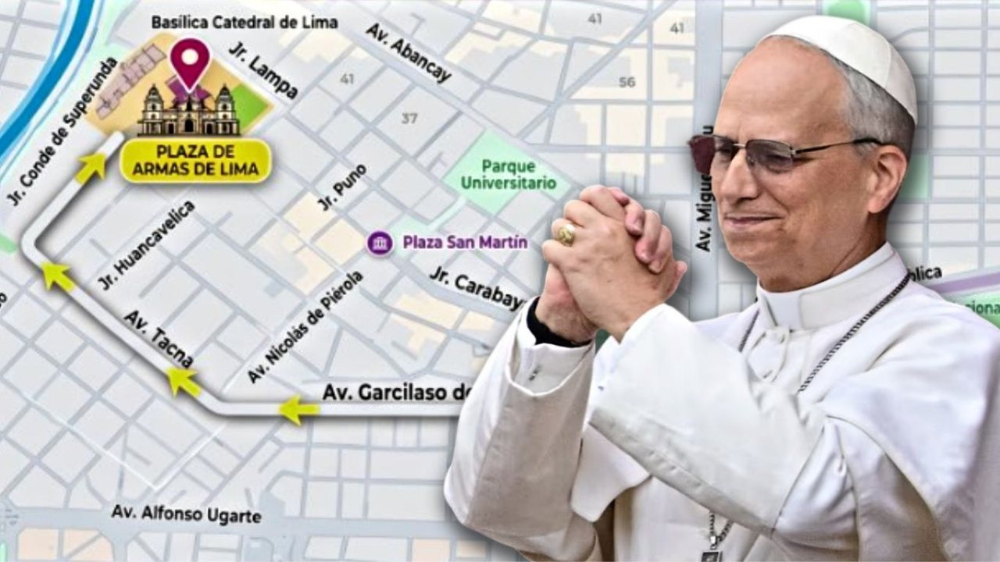
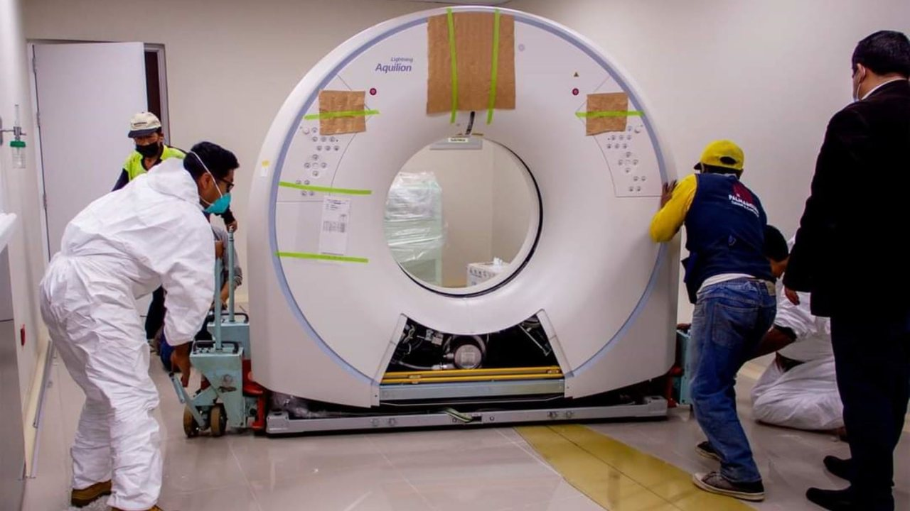
El papa León catorce inicia hoy su visita apostólica de seis días al Perú, la más extensa de su gira sudamericana en 2026. “ Bueno, después pasaron los años y como monseñor Miguel (Cabrejos) ha contado desde el año 1985, no seguidos, pero siempre he estado pues muy presente (en el Perú).
Credicorp calcula que El Niño restaría alrededor de 0,9 puntos porcentuales al PBI de 2026 y cerca de un punto porcentual al de 2027. El impacto de El Niño restará cerca de un punto porcentual al crecimiento del PBI de Perú en 2027.
Añadir El Comercio como fuente preferida en Precio del dólar en República Dominicana hoy, miércoles 11 de noviembre: cuánto cuesta el USD a DOP, compra y venta Revisa el precio del dólar en República Dominicana hoy, miércoles 11 de noviembre de 2026.
La Municipalidad Metropolitana de Lima anunció que este miércoles 11 de noviembre el Circuito Mágico del Agua rendirá un homenaje especial al papa León catorce, con una proyección audiovisual dedicada a su trayectoria religiosa y a su vínculo con el Perú.
Papa León catorce en Perú: Últimas noticias del Santo Padre El papa León catorce recibe el saludo de un alto mando de las Fuerzas Armadas minutos antes de salir de la Basea Naval del Callao. Soy Merlín, el agente de IA de El Comercio.
Este año, Perú consiguió 16 Leones y dos Grand Prix en Cannes Lions, un resultado histórico para la industria creativa local. Para el ejecutivo, esa evolución también refleja una transformación del propio Cannes Lions.
grados 8 de la Base Aérea del Callao, donde la presidenta Keiko Fujimori, encabezará la bienvenida oficial. La Municipalidad de Lima estimó que 12,000 personas acudirán hoy a la Plaza de Armas y 15,500 mañana.
Wall Street cerró al alza este miércoles, impulsada por un repunte de los valores tecnológicos gracias a los buenos resultados trimestrales de la constructora de centros de datos Core Weave. Core Weave se ha convertido en una piedra angular en el desarrollo y funcionamiento de la inteligencia artificial (IA).
Gómez Martínez atribuyó la situación fiscal a la administración de Gustavo Petro, a la que acusó de “dejar un gasto desbordado y de desconocer normas y límites sobre el endeudamiento y el control presupuestario”.
Cada edición dura menos de dos minutos. En la web tienes el resumen de cada historia y el enlace directo al medio original para leerla completa.
Conoce Olfatecho →